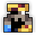
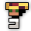

| Last updated: Exalt Version 5.13.0.0 (June 2025) |
|---|
 Music: The Hempen Jig Music: The Hempen Jig
|
| Dust Drops | ||
|---|---|---|
| 37-43 |
39-45 |
0 |
The Deadwater Docks is a high-level dungeon that is a much more difficult version of the Pirate Cave.
This dungeon is a source for both Greater Potions of Speed and Greater Potions of Dexterity. It is also the main source of the Pirate King’s Cutlass and the Wavecrest Concertina, along with the entire Pirate King Warrior ST Set.
The portal to Deadwater Docks has a chance to drop from Snow Wolf, Sunken Treasure and Corsair Crab. It is also guaranteed to drop from Bilgewater’s Galleon and Crab Sovereign.
This dungeon must be completed to earn ‘Explosive Journey‘, ‘Epic Battles‘, ‘Hero of the Nexus’ and ‘Realm of the Mad God’ fame bonuses.
| The Realm Eye says: |
|---|

As Dreadstump became more interested with parties than piracy, Jon Bilgewater and his crew seized the opportunity to make a name for themselves. For several years, Bilgewater’s buccaneers ran an efficient smuggling syndicate carrying prohibited goods between their grotto and the kingdom now known as the Shatters. Though they were caught by authorities on many occasions, they always managed to weasel their way out of any serious consequences. |
 The Deadwater Docks Key is available in the Nexus for 100  .
.
The Deadwater Docks Guide is currently a work in progress.
The dungeon is a sprawling series of islands and wooden platforms connected by wooden walkways and surrounded by harmful Dead Water. Enemies and hazards staff the entire map, and many of the islands also have furnished buildings made of beige brick. Crates, weapon stands, lamps, and other implements are scattered around the platforms, while buoys can be found floating in the water.
Spawn Room
Players spawn inside a small ship docked at a large, crescent-shaped island. Two Explosive Barrels are always found on the spawn island to demonstrate how they work.
Treasure Room
The treasure room is a plain, skull-shaped island with Bilgewater’s Booty in the center. A large numbers of elite enemies defend the treasure, and must be eliminated before the chest becomes vulnerable.
Boss Room
The boss of the dungeon is found on a massive wooden pirate ship adorned with red carpets. Elite enemies patrol the ship, and two ornate rooms flank the hallway leading up to a large square room where Jon Bilgewater can be found. The floor of the boss room will get progressively more damaged over the course of the fight, causing Dead Water to flood many of the tiles.
A single Calamity Crab will always spawn in a random location within each Deadwater Docks, and will randomly roam the dungeon in search for players, savagely attacking anyone that it finds. Players that encounter the Crab may either battle it or flee far enough that it loses interest. It is extremely powerful, but slaying it yields loot akin to what the boss himself would drop.
If the Crab Rave I/II modifier is currently active within a Deadwater Docks, the single Calamity Crab found in the dungeon will instead be replaced a group of several Commotion Crabs: 4 for Crab Rave I, and 6 for Crab Rave II.
Special, invincible chests can be found on skull-shaped islands guarded by a large number of Deadwater Admirals, Captains, and Lieutenants. Killing all the enemies will make the chest vulnerable. There is always one treasure room per dungeon, and the chest will randomly be in one of three colors that determine the quality of its loot.
The Deadwater Docks is part of the Mighty Quest pool from The Tinkerer and has four associated quests.
| Name | Description | Items Needed | Reward |
|---|---|---|---|
| The New King | Defeat Jon Bilgewater in the Deadwater Docks. |  |
|
| Epic Showdown | Slay Jon Bilgewater, the Son of Arachna, and the Murderous Megamoth to be rewarded. |   |
|
| Thar be Pirates! | Avast! Clear out the pirate presence in the realm! |  |
|
| Ocean Man | With how vast the realm is, you’d think Oryx wouldn’t care for the high seas. |  |
Always remain cautious when traversing through the Docks. Many of the small minions have highly damaging attacks, the Lieutenant quickly chases you when in range, the Admiral has a deadly shotgun attack, and if you somehow meet the Calamity Crab while being stuck in a corner, you’re in for a lot of trouble.
Despite the fearsome display of the Calamity Crab, dealing with it is simple: either find a large, safe space to rotate around, or constantly drag it to either the spawn boat or the boss area:
For the former case, it is important to clear the area you’re going to rotate in; otherwise, the small fry might catch you off-guard and make you easy prey for the crustacean.
For the latter, while this strategy is time-consuming, it is also safe, as the crab disengages whenever it hits the spawn or boss ship.
However, if you are lucky to meet the much smaller Commotion Crabs, you will have an easier time dealing with them individually. However, if they come in groups, be cautious with your surroundings, as they can be deadly with their massive barrage of shots, especially if you get Armor Broken.
It is important to note that both crabs will stagger when Exposed for the first time, leaving them vulnerable to massive damage. Time the Expose properly though; after a few seconds, they will recover and can no longer be staggered.
Remain cautious during the actual boss fight. While Bilgewater normally has relatively tame attacks, the environmental cannonballs fired around the arena add pressure throughout the fight. There is also an intermediary phase when he releases Bartholomew the parrot that chases nearby players, and a special attack at low HP which is slightly more dangerous than his other attacks, but grants you an opportunity to deal massive damage when he is done attacking.
This dungeon was added in Release 16.0.0 (Aug 2013) alongside The Crawling Depths, and Woodland Labyrinth, comprising the first three “Epic Dungeons”. The original name for this dungeon was: ‘Epic Pirate Cave’. See the original Deadwater Docks here.
Before Patch X.32.4.1 (Jan 2020), the portal had the following sprite:
")
In Exalt Version 1.4.0.0 (Mar 2021), this dungeon along with the Sprite World received complete reworks, changing almost all content in the dungeon.
Before Exalt Version 1.4.0.0 (Mar 2021), the Deadwater Docks used to drop from the Crystal Prisoner, which only spawns once per realm meaning you could only do this dungeon once per realm.
Before Exalt Version 5.11.0.0 (May 2025), dungeon completion gave 45-104  with 60% chance and 13-31
with 60% chance and 13-31  with 50% chance.
with 50% chance.
Before Exalt Version 5.12.0.0 (June 2025), dungeon completion gave 34-40  and 30-36
and 30-36  .
.


{kind=link}